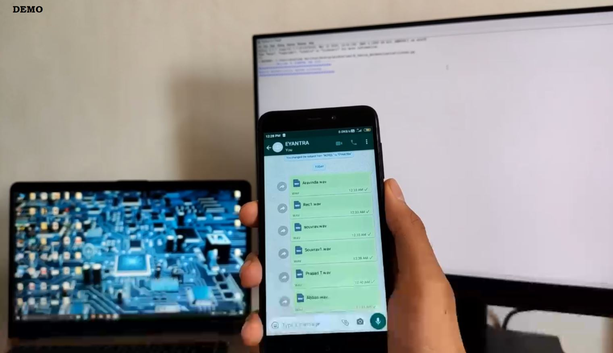
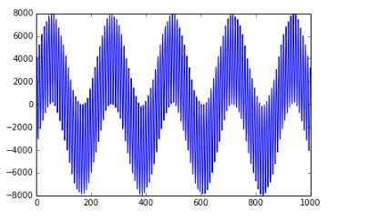
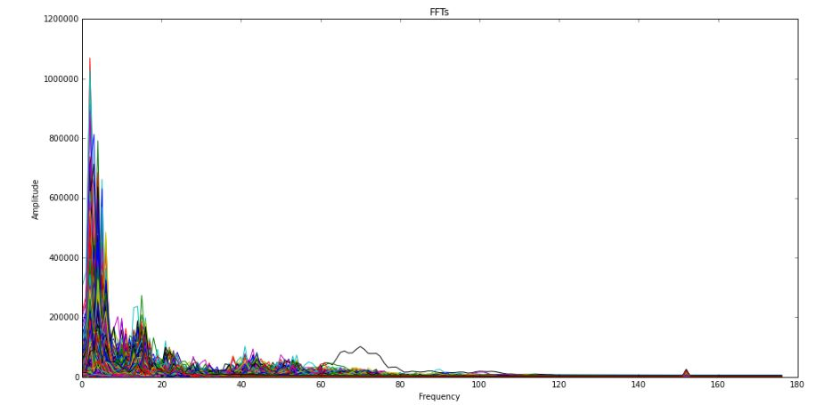
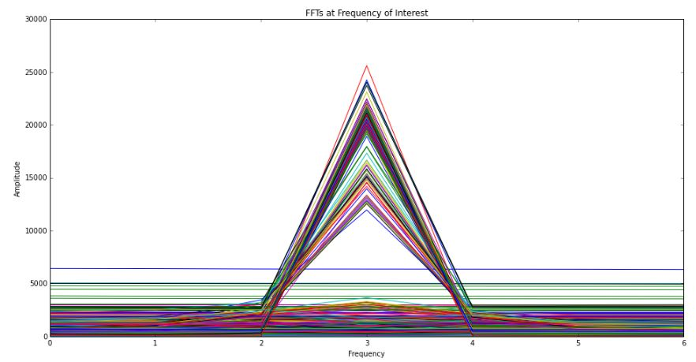
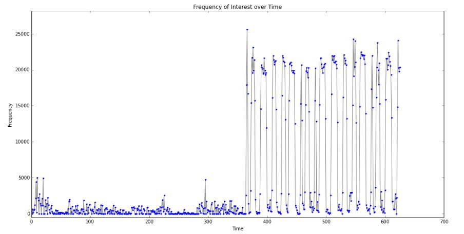
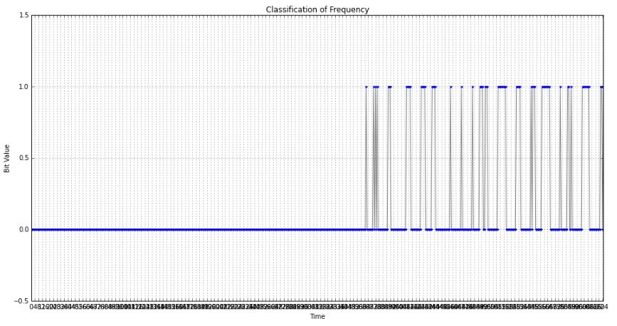
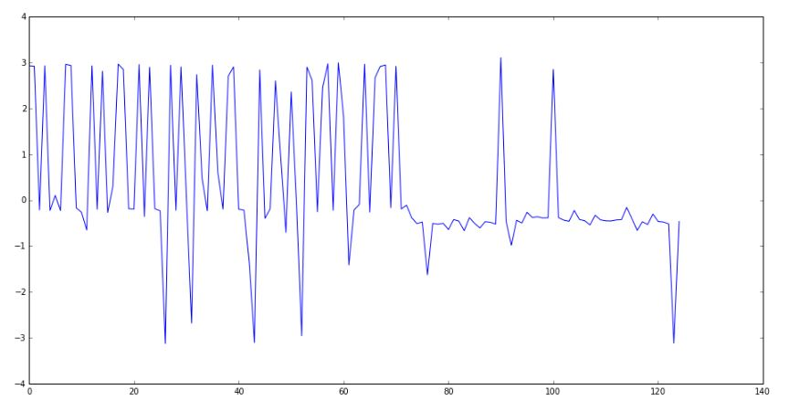
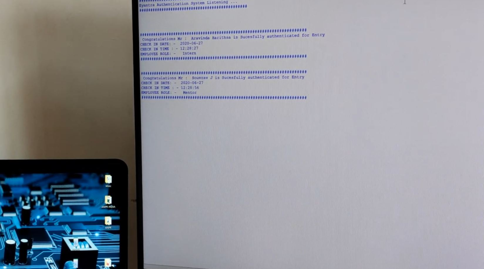

Python Implementation
This is about python implementation of the authentication system which we discussed where we will be authenticating using the laptop based program laptop will be continuously listening from mic. Here, We have implemented multi-threading as well to increase the sampling rate and also provide accurate results. We have used mobile phone with laptop .

This is screenshot of the demo system- where the audio key is being played from phone and recieved by laptop . Now lets look into more details and components .
Software used
- Python 3.7
- Pyaudio module
How does it work?
We will be sending useful information in inaudible spectrum range of 17-20khz and each user will be given a unique frequency to communicate with the authenticating node or device . He will send his encrypted key in serial format . We will be using Phase shift keying technique to send the data from mobile device to the authenticating node or laptop . Once the information received matches with the user credentials then the system will authenticate them and logs in their time of arrival and other details automatically .
Our approach
Our main logic is it will be consistently listening and once it receives sound then It takes the input data or input audio and puts into bin, bin is a container where the raw audio samples will be stored . once bin is full then will be processed for fast Fourier transform and after applying for fast Fourier transform we will be obtaining the spectrum .We will use frequency versus time plot to get the input data serial information which will be sent with PSK (phase shift keying) encoded signals .Then we will apply lot of algorithms to extract the input data , . We should provide you with the Information here in this we are using a Serial based communication where we will be sending the details in one particular frequency between user and the computer and then once the contents are received in that content are decoded using the psk module where the incoming data will be decoded. And also we will be providing our data with extra zeros so that any error or any ambient noise or Distortion might be possibly removed
Decoding methodology ( Serial communication )

This is example of input signal which will be heard by the laptop's mic. This particular signal will be decoded by using various steps mentioned below to obtain the useful information out of these
The FFT algorithm will be applied to get the spectrum of the input signal, here in python we will be using FFT libraries included under numpy module which will provide us with the below spectrum which is plotted using matplotlib
This is the plot of input signal's FFT plotted

We require only one frequency information so we will be rejecting every other values and concentrating on the value which is being sent from the phone. The below plot will show us the FFT which is plotted for one particular region of the whole spectrum and everything else will be rejected

Once we get the frequency to which we are listening to then we will plot the frequency vs time we will obtain the below results as shown in the plot

Once we get this plot then we will look for our desired frequency range where the signal was sent and suitable filters will be applied to remove and normalize the input serial information into more generalized processable format which can be co-related with bit values which are being sent as shown below

From this again all the phase changes will be determined as we will be using PSK modulation technique to decode that data we need to know the points where the phase will change

once we obtain the decoded signal this will be compared with the PSK dictionary for getting the values or characters which were being sent from the phone . As this being mission critical task we have to use multithreading where each thread will be doing it;s own allotted task and be communicating between each other ,even if we miss 0.1 seconds we would loos lot of vital information . Thus by this system we will successfully establish communication system thereby making way for secure authentication using sound signals
We tested this on our laptop and we were able to successfully authenticate with audio based key. Range was also good. Pre-Generated Ultrasonic music based keys were played and those were decoded with almost 100% accuracy by our system , Here is the clip of the obtained results .

Here in this pic 2 of the users where authenticated using the ultrasonic audio key which was played by phone . as this was proof of concept we just tested on to static key generation , in future versions we will work on dynamic key which will be exchanged based on encoding and decoding key based on time factor .
Future scope
This particular concepts are You can implement this as a two-factor authentication where Google users you send the passcode that has a dependency on your cellular area network, but this doesn't have any net dependency. We successfully tested this particular model and results are obtained were highly accurate and We have also shown popper demo videos.